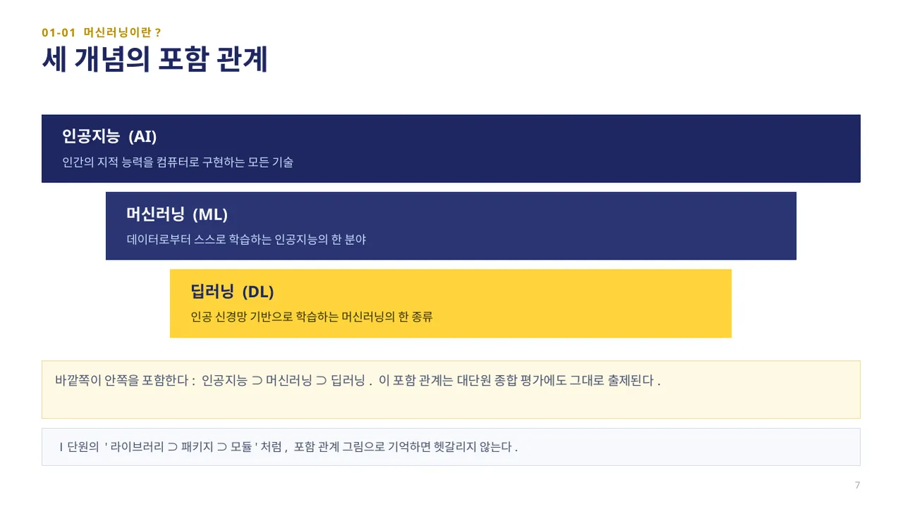
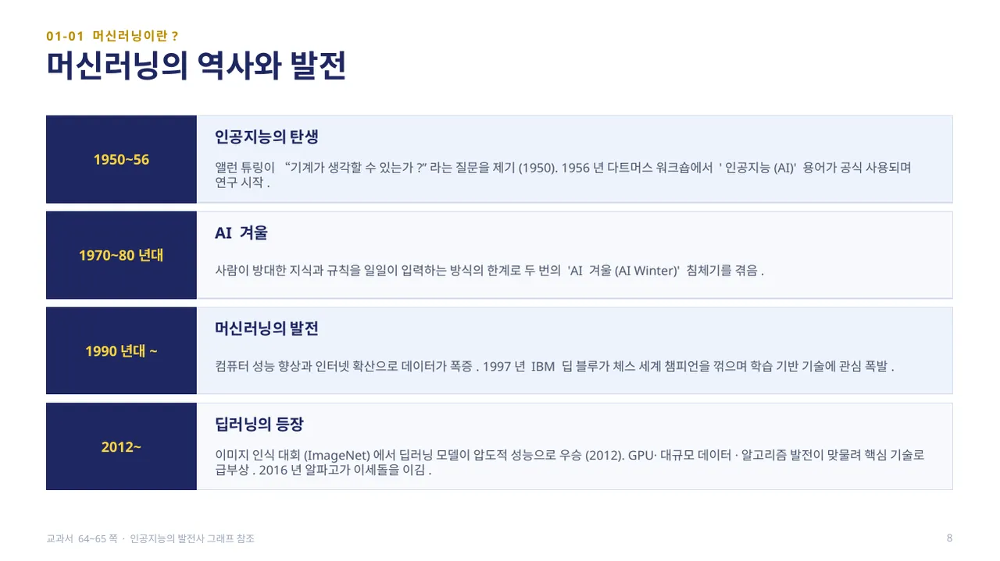
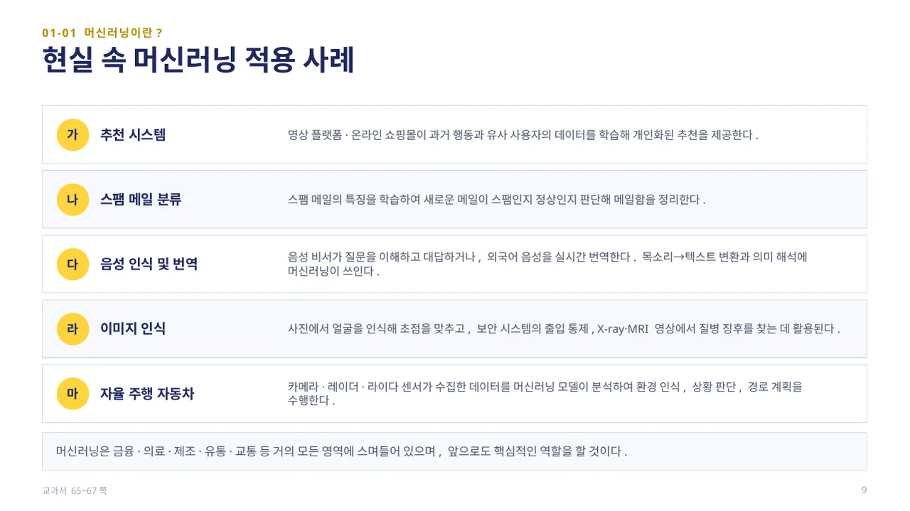
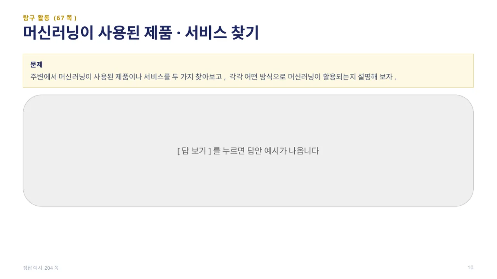
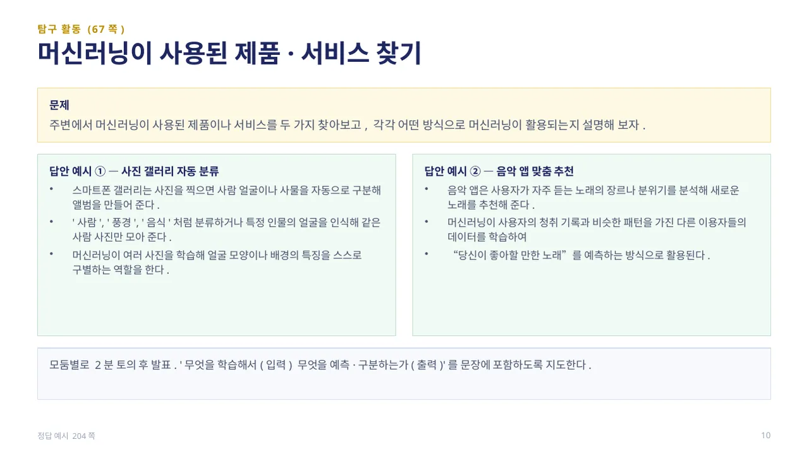

인공지능(AI)은 컴퓨터가 인간의 지능적인 행동을 모방하도록 만드는 기술을 통틀어 말합니다. 가장 넓은 의미의 개념으로, 사람처럼 생각하고 판단하며 학습하고 문제를 해결하는 지적 능력을 컴퓨터로 구현하려는 모든 시도를 포함합니다.
머신러닝은 인공지능의 한 분야로, 사람이 명시적으로 프로그램을 작성하지 않아도 컴퓨터가 데이터로부터 스스로 학습할 수 있게 하는 기술입니다. 어린아이가 경험을 통해 세상을 배우듯, 컴퓨터도 많은 데이터를 통해 지식을 쌓아 갑니다.
딥러닝은 머신러닝의 한 종류로, 인간의 뇌 신경망을 모방한 인공 신경망(Artificial Neural Network)을 기반으로 학습하는 기술입니다. 이미지 인식, 음성 인식, 자연어 처리 등 최근 인공지능 기술의 발전은 대부분 딥러닝 덕분입니다. (교과서 63쪽)

세 개념은 서로 별개가 아니라 바깥쪽이 안쪽을 포함하는 관계입니다: 인공지능 ⊃ 머신러닝 ⊃ 딥러닝. 인공지능은 인간의 지적 능력을 컴퓨터로 구현하는 모든 기술이고, 머신러닝은 그중 데이터로부터 스스로 학습하는 분야이며, 딥러닝은 인공 신경망 기반으로 학습하는 머신러닝의 한 종류입니다.
모든 딥러닝은 머신러닝에 속하지만, 모든 머신러닝이 딥러닝인 것은 아닙니다. Ⅰ단원에서 배운 라이브러리 ⊃ 패키지 ⊃ 모듈의 포함 관계와 같은 방식으로 기억하면 헷갈리지 않습니다. (교과서 63쪽)

머신러닝은 오늘 갑자기 등장한 기술이 아닙니다. 1950년 앨런 튜링이 “기계가 생각할 수 있는가?”라는 질문을 제기했고, 1956년 다트머스 워크숍에서 ‘인공지능(AI)’이라는 용어가 공식적으로 사용되며 연구가 시작되었습니다.
1970~80년대에는 사람이 방대한 지식과 규칙을 일일이 입력하는 방식의 한계로 두 번의 ‘AI 겨울(AI Winter)’ 침체기를 겪었습니다. 1990년대 이후 컴퓨터 성능 향상과 인터넷 확산으로 데이터가 폭증했고, 1997년 IBM 딥 블루가 체스 세계 챔피언을 꺾으며 학습 기반 기술에 관심이 폭발했습니다.
2012년 이미지 인식 대회(ImageNet)에서 딥러닝 모델이 압도적 성능으로 우승하며 GPU·대규모 데이터·알고리즘 발전이 맞물려 핵심 기술로 급부상했고, 2016년 알파고가 이세돌을 이겼습니다. (교과서 64~65쪽)

머신러닝은 이미 생활 곳곳에 적용되어 있습니다. 영상 플랫폼·온라인 쇼핑몰은 과거 행동과 유사 사용자의 데이터를 학습해 개인화된 추천을 제공하고, 스팸 메일 분류는 스팸의 특징을 학습해 새 메일이 스팸인지 판단합니다.
음성 비서의 질문 이해·응답이나 실시간 번역, 사진 속 얼굴 인식·보안 시스템의 출입 통제, X-ray·MRI 영상에서 질병 징후를 찾는 것도 머신러닝의 사례입니다. 자율 주행 자동차는 카메라·레이더·라이다 센서 데이터를 머신러닝 모델이 분석해 환경 인식·상황 판단·경로 계획을 수행합니다.
이렇게 머신러닝은 금융·의료·제조·유통·교통 등 거의 모든 영역에 스며들어 있으며, 앞으로도 핵심적인 역할을 할 것입니다. (교과서 65~67쪽)

탐구 활동(67쪽): 주변에서 머신러닝이 사용된 제품이나 서비스를 두 가지 찾아보고, 각각 어떤 방식으로 머신러닝이 활용되는지 설명해 봅니다.
답 보기답 숨기기

답안 예시 — 사진 갤러리 자동 분류: 스마트폰 갤러리는 사진을 찍으면 사람 얼굴이나 사물을 자동으로 구분해 앨범을 만들어 줍니다. 머신러닝이 여러 사진을 학습해 얼굴 모양이나 배경의 특징을 스스로 구별하는 역할을 합니다. 음악 앱 맞춤 추천: 사용자가 자주 듣는 노래의 장르나 분위기를 분석해, 청취 기록과 비슷한 패턴을 가진 다른 이용자들의 데이터를 학습하여 새로운 노래를 예측해 추천합니다. (정답 예시 204쪽)
 인공지능 파이썬 실무
인공지능 파이썬 실무